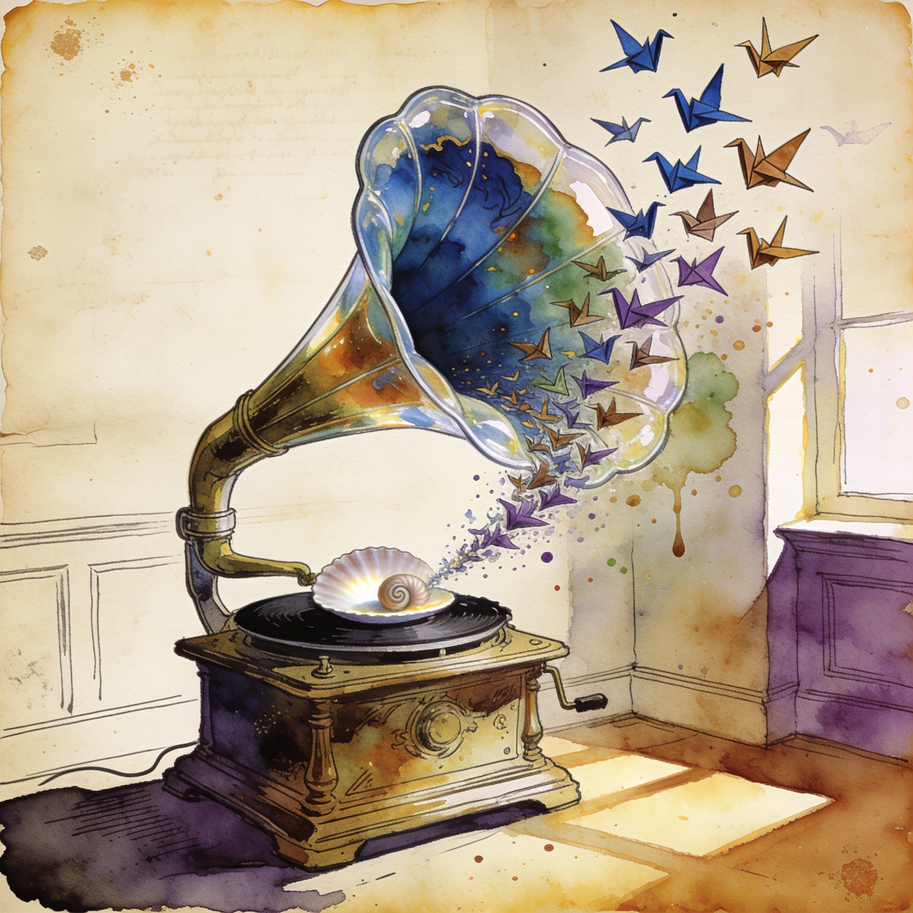

Voice AI
Mistral ships Voxtral 3: a voice agent SDK with self-deployable speech models in 50+ languages
Mistral announced Voxtral 3, a voice agent SDK plus speech models for real-time transcription and voice generation across more than 50 languages. Its Voxtral Small Transcribe 3 model is state-of-the-art in multilingual transcription with diarization and context-biasing, and a 4B Mini variant targets smaller hardware. Models are available via Mistral's EU-hosted API or for self-deployment, putting frontier-grade voice pipelines inside local stacks.